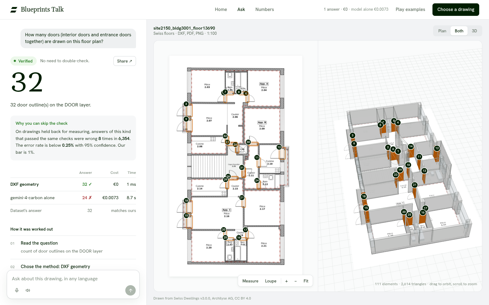
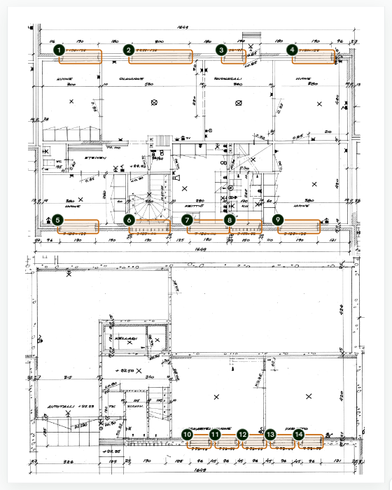

Junction 2026 · Stoa · Make Blueprints Talk
Counts, areas and volumes computed from the drawing's own geometry and marked on the sheet, so a project engineer can check an answer in seconds. Every answer is Verified, Check this, or Can't answer reliably.
The problem
correct. Gemini 4 Carbon, given the image and asked for the number. Re-weighted to the dataset's mix of questions: 77.3%.
On a floor with 32 doors it answers 24. Nothing on the screen says which eight it missed.
The idea
A router sends each question to the cheapest method that can answer it from the drawing itself. The language model reads questions and marks items; the code does the counting and the measuring.
The remaining 0.6% are free-text questions about building models, which have no engine yet. Shares are of the dataset's 127,044 questions.
Reliability
Thresholds are set on calibration drawings the engines were never tuned on: a kind of answer is Verified only if the 95% upper bound on its error rate is at most 1%.
Check this: the answer and its evidence, with the reason it needs a look. Can't answer reliably: no number, and why. A wrong Verified answer is the worst outcome, so abstaining is always allowed.
Verification


On a scan there is no geometry to query. Gemini draws a box round each window and the code counts the boxes: 14. Each box can be checked, or left out.
Results
| Same 200 development questions | Model alone | This system |
|---|---|---|
| Correct | 62.5% | 95.8% |
| Re-weighted to the dataset's mix | 77.3% | 95.9% |
| Cost per 1,000 questions | €7.99 | €3.15 |
| Answers marked Verified | 0 | 69 |
| of them wrong | 0 |
The scan prompt was tuned on this sample's scans, so scans were measured again on 100 questions from drawings no sample had used: 89.0%. With that figure the re-weighted total is near 92.6%. The test split has not been opened.
Honest by design
When the printed labels and Gemini give the same count they are wrong 10 times in 762 on calibration drawings. Better than either alone, above our 1% bar. It stays Check this, and the screen says why.
Reading scans after AI enlargement gave fewer right answers and three times the errors where the engine is trusted most. The enlarged view is for the reader's eyes only, and is labelled.
Gemini at high thinking cost €0.10 and three minutes per question in a pilot, and three of eight replies ran out of tokens. Low thinking: €0.007 and eight seconds. We measured before choosing.
Drawings are split into development, calibration and test by drawing. Engines and prompts are built on development drawings only, calibration drawings set thresholds from totals, the test split is unopened, and no answer is looked up from the public annotations of the source datasets.
Built to last
Next
Demo and source code: see the links in the Junction submission. The code is MIT-licensed.